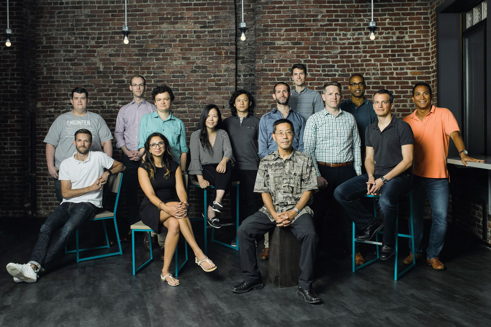

Investing in Tech That’s Worth the Wait
by Michael Blanding February 21, 2018
Liquid separation wouldn’t top most people’s lists of world-changing technologies. But consider this: every day, US companies tease apart chemicals in billions of reactions to make food and beverages, drugs, and fuel. In fact, this process is so common in industrial settings that it uses as much energy as all US cars and trucks combined. “It represents 12 percent of all US energy consumption,” says Shreya Dave, cofounder of the year-old startup Via Separations. “It’s 80 percent of the cost of making a chemical, 75 percent of the cost of making a pharmaceutical.”
That’s largely because separation technology relies largely on a wasteful and time-consuming procedure that’s hardly changed in 100 years: using heat to boil and condense chemicals into a pure form. Filtering liquids with a membrane is more efficient, but it’s difficult to find one stable enough to avoid reacting with the chemicals it’s supposed to filter, or fine enough to filter nanoparticles. While doing her doctoral research on water desalination in Jeffrey Grossman’s lab at MIT, Dave helped develop a membrane that’s both pliable and chemically stable. The key was oxidizing graphite—the same stuff used for pencil lead. And by precisely tailoring the structure of the graphite, Dave and her colleagues optimized the membrane to filter chemicals in the sweet spot between one and 100 nanometers, as many industrial processes require. Dave and her business partner, Brent Keller, hope their membranes can transform a large sector of our economy and our environment—and potentially provide a bonanza for investors as well.
That’s the kind of idea MIT had in mind in 2016 when it launched The Engine, a new venture fund–slash–accelerator–slash–laboratory to help early-stage startups negotiate the chasm between a promising technology in the lab and a world-changing business. “We go after things that we think can have huge impact in the world, and help them shorten their path to market,” says CEO and managing partner Katie Rae. The Engine invests in what it calls “tough tech” startups—those that require expensive specialized equipment or longer time frames than is realistic for most venture capital funds, which want their investments to pay off in 10 years or less. While it pursues big ideas that might take more time, Rae adds, “the trade-off is that the markets have to be enormous.”